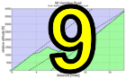
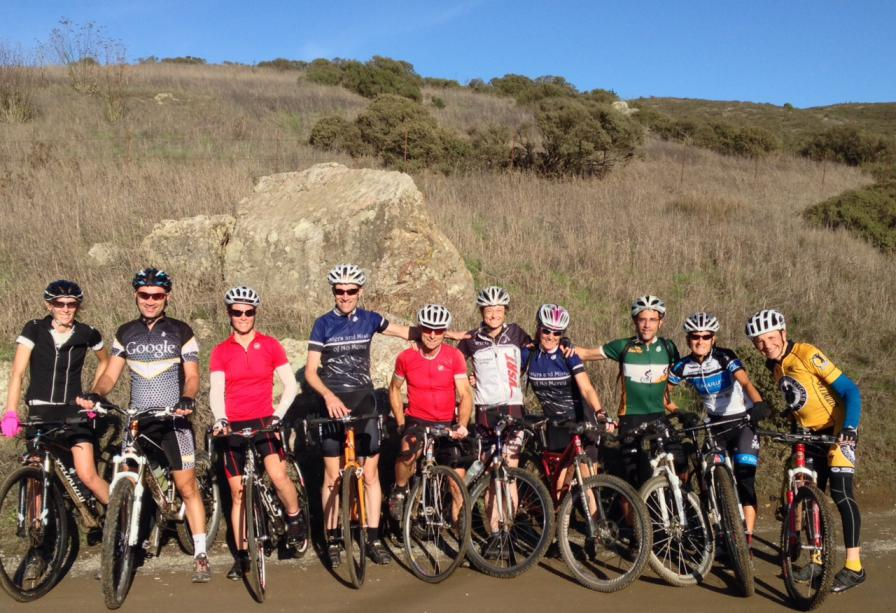

|
 |
|  |
| Sisters and Misters group, w/ interloper (Paul McKenzie) |
Early morning rains blew through by 10 am leaving blue skies, warm temperatures, and crystal-clear views as Low-Key Hillclimbs paid visit to the gorgeous fire roads of the Marin Headlands.
The dry gravelly trails of the week before were replaced with slightly tacky, damp dirt which improved traction, but the question was whether it would be fast. That question was answered definitively as both men's KOM and women's QOM were broken on Miwok, the first of two climbs, today. Miwok is a very old segment, number 117 in the Strava list, and your humble reporter throught the KOM, at least, was out of reach, but David Collet, on his first ride in the Headlands, broke Andrew Touchstone's existing KOM by only one second. And Sarah Shroer broke the QOM set by Amy Cameron just 10 days prior.
Bobcat was the second of our two climbs today and the existing KOM and QOM are safe so far, the QOM also set by Amy Cameron 10 days ago.
Results are still coming in, so the following are preliminary, and in particular number assignments 800 and above may change as new riders upload their data.
Huge thanks to Reid Griggs for marking the start and finish of the climbs the day before. The lines were still visible today despite the rain. And thanks to Bill Bushnell for taking photos.
KOM special mention qualifiers indicated with orange background.
| pl | # | name | team | cat | time | mph | fph | score |
|---|---|---|---|---|---|---|---|---|
| 1 | 626 | Sarah Schroer | Sr's & Mr's of No Mercy | 40+ | 21:38.86 | 7.29 | 3692 | 126.41 |
| 2 | 400 | Amy Cameron | Sr's & Mr's of No Mercy | 35+ | 21:45.16 | 7.25 | 3674 | 125.90 |
| 3 | 72 | Janet Gardner | Sr's & Mr's of No Mercy | 45+ | 24:45.89 | 6.37 | 3227 | 113.01 |
| 4 | 228 | Jennie Phillips | Sr's & Mr's of No Mercy | 50+ | 25:53.89 | 6.09 | 3086 | 108.88 |
| 5 | 311 | Holly Harris | Sr's & Mr's of No Mercy | 50+ | 32:13.66 | 4.90 | 2480 | 90.76 |
reference time for division Women = 28:41.06
| pl | # | name | team | cat | time | mph | fph | score |
|---|---|---|---|---|---|---|---|---|
| 1 | 45 | David Collet | Pen Velo/Pomodoro | 40+ | 16:29.30 | 9.57 | 4847 | 135.65 |
| 2 | 112 | Rob Nast | Plus 3 | 50+ | 18:57.03 | 8.33 | 4217 | 120.80 |
| 3 | 78 | Rich Hill | LGBRC | 45+ | 19:15.73 | 8.19 | 4149 | 119.17 |
| 4 | 90 | Glen Kinion | Sr's & Mr's of No Mercy | 50+ | 19:18.97 | 8.17 | 4137 | 118.90 |
| 5 | 315 | Paul McKenzie | Sr's & Mr's of No Mercy | 60+ | 20:36.30 | 7.66 | 3879 | 112.67 |
| 6 | 1 | Daniel Connelly | Low-Key | 45+ | 21:01.97 | 7.50 | 3800 | 110.76 |
| 7 | 71 | Bruce Gardner | Sr's & Mr's of No Mercy | 35+ | 21:22.86 | 7.38 | 3738 | 109.26 |
| 8 | 802 | Dan Reynolds | Castro Valley Cyclery | 22:23.24 | 7.05 | 3570 | 105.15 | |
| 9 | 803 | Mark Slavonia | Pen Velo/Pomodoro | Masters 45+ Cat. 3 | 23:22.74 | 6.75 | 3418 | 101.42 |
| 10 | 29 | Jeffrey Baxter | LGBRC | 45+ | 23:28.07 | 6.72 | 3405 | 101.10 |
| 11 | 117 | Frank Paysen | Chain Reaction | 50+ | 23:30.77 | 6.71 | 3399 | 100.94 |
| 12 | 47 | Richard Contreras | 55+ | 25:01.63 | 6.31 | 3193 | 95.83 | |
| 13 | 309 | Gary Gellin | Sr's & Mr's of No Mercy | Runner On A Mountain Bike | 25:37.35 | 6.16 | 3119 | 93.97 |
| 14 | 800 | Daniel Chao | 25:53.93 | 6.09 | 3086 | 93.14 | ||
| 15 | 114 | Bart Niechwiej | 35+ | 27:33.44 | 5.73 | 2900 | 88.45 | |
| 16 | 139 | Jeremy Scott | Scott | 40+ | 28:07.66 | 5.61 | 2841 | 86.95 |
| 17 | 508 | Frank Drobot | Team Djament | 65+ | 28:20.83 | 5.57 | 2819 | 86.39 |
| 18 | 801 | Eric Lawrence | Team Djament | 30+ | 28:49.92 | 5.47 | 2772 | 85.18 |
reference time for division Men = 23:46.76
| pl | # | name | team | cat | time | mph | fph | score |
|---|---|---|---|---|---|---|---|---|
| 1 | 6 | Bill Bushnell | Low-Key | In Cognito | 39:22.40 | 4.01 | 2030 | 71.81 |
reference time for division Male Runner = 23:46.76
| pl | team | score | riders |
|---|---|---|---|
| 1 | Sr's & Mr's of No Mercy | 371.21 | Amy Cameron, Holly Harris, Janet Gardner, Jennie Phillips, Sarah Schroer, Bruce Gardner, Gary Gellin, Glen Kinion, Paul McKenzie |
| 2 | Pen Velo/Pomodoro | 237.07 | David Collet, Mark Slavonia |
| 3 | LGBRC | 220.28 | Jeffrey Baxter, Rich Hill |
| 4 | Low-Key | 182.57 | Daniel Connelly, Bill Bushnell |
| 5 | Team Djament | 171.57 | Eric Lawrence, Frank Drobot |
| 6 | Plus 3 | 120.80 | Rob Nast |
| 7 | Castro Valley Cyclery | 105.15 | Dan Reynolds |
| 8 | Chain Reaction | 100.94 | Frank Paysen |
| 9 | 88.45 | Bart Niechwiej | |
| 10 | Scott | 86.95 | Jeremy Scott |